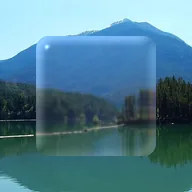

Vetro liquido

Trasforma la forma del livello in vetro trasparente e arrotondato, come il pulsante di un telefono: i livelli retrostanti si deformano soprattutto vicino al bordo, luminoso sul lato illuminato e più tenue su quello opposto. Vetro satinato sfoca lo sfondo e Bordo arcobaleno separa i colori sul bordo.
Impostazioni
| Impostazione | Tipo | Intervallo | Predefinito |
|---|---|---|---|
| Bordo | Numero | Da 0 px a 300 px | 40 px |
| Deformazione | Numero | Da -300 px a 300 px | 45 px |
| Vetro satinato | Numero | Da 0 px a 40 px | 3 px |
| Bordo arcobaleno | Numero | Da 0% a 100% | 30% |
| Angolo luce | Angolo | Da -3600° a 3600° | 135° |
| Riflesso | Numero | Da 0% a 100% | 80% |
| Colore | Colore | – | #FFFFFF |
| Tinta | Numero | Da 0% a 100% | 8% |